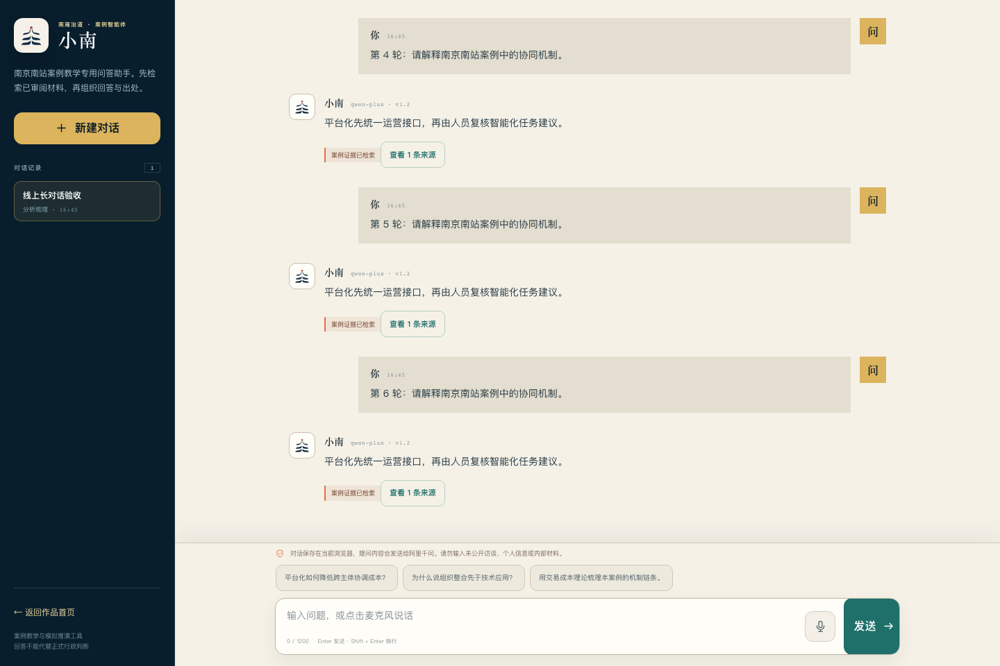
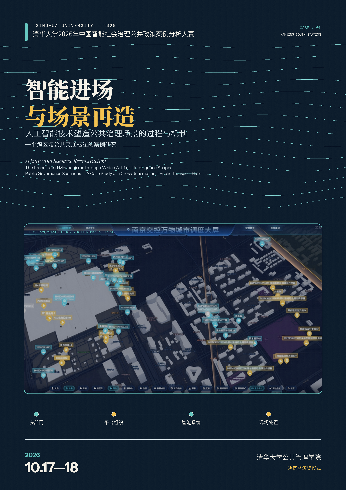
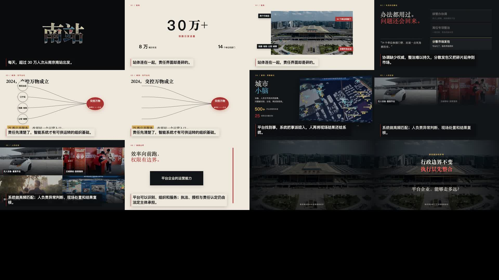

Works
优先放能直接打开、能被评审或同学快速理解的成品。
用两分钟呈现“九龙治水”、平台企业进入和智能化治理边界。网页内嵌的是 GitHub 友好的预览版。
介绍智能体如何围绕跨域枢纽事件整理证据、提示权责边界、起草协同议题卡并保留人工确认。
一个面向评审展示的离线网页，展示案例叙事、协同官作品和关键机制分析。

基于南京南站已审阅案例材料检索回答，支持事实核对、机制分析、相关方模拟、来源展开和中文语音输入。
Code
每个项目保留自己的源码、文档、构建方式和验收记录；能静态打开的版本优先留在项目根目录。
轻量静态网页项目，案例正文与分析统一使用成品站点中的案例故事和案例分析页面。

用于呈现站场空间、客流、事件演进和跨部门决策的三维治理沙盘。

保留视频时间线、制作数据、旁白文本和代码。渲染输出不进 Git，终版成片另行管理。
Archive
这些文件帮助团队知道材料从哪里来、后来应放到哪里、上线时哪些内容需要换成网页预览版。
自动生成的全量文件索引，适合查找具体源码、页面、视频和说明。
后续项目放置规则、GitHub Pages 发布方式和大视频处理边界。
每个新项目建议保留的 README、源码、静态交付页、验收记录和数据边界。
南站协同官的产品范围、工程想法和参赛展示准备材料。